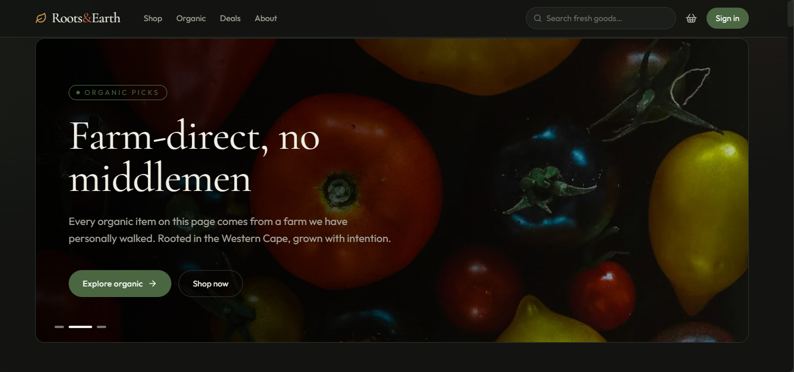

Njabulo Nkosi
Data & Insights Analyst | Full-Stack Developer
Bridging raw data and board-level strategy through scalable analytics — and building the full-stack applications that bring those insights to life.
Data & Insights Analyst | Full-Stack Developer
Bridging raw data and board-level strategy through scalable analytics — and building the full-stack applications that bring those insights to life.
I work at the intersection of data and technology — building Power BI dashboards and advanced SQL pipelines that turn messy datasets into board-level strategy, while also engineering full-stack applications using React, Supabase, and PostgreSQL that bring those insights to life.
My standout project: pioneering the data strategy for a $7.6B Automotive portfolio that uncovered a 1,052% revenue growth trajectory — redefining how an entire organisation approached regional investment.
Currently deepening expertise in Azure and Databricks cloud engineering, and building production-grade applications with real users and live payments. Open to BI Analyst, Data Engineer, and Full-Stack roles where data and technology solve real problems together.
I spend most of my time here — writing SQL, building pipelines, and making sure data is clean, structured, and trustworthy before any analysis begins. I have worked across cloud and on-premise environments at scale.
I translate numbers into narratives. Whether it is a Power BI dashboard for a C-suite meeting or a Looker Studio report for a marketing team, I make sure the story is clear, the insight is actionable, and the stakeholder walks away knowing exactly what to do next.
I build the applications that bring data to life — from database design and backend logic to frontend interfaces that real users interact with every day. I have shipped production applications with live payments, authentication, and real-time data.
Data without strategy is just noise. I use planning and design tools to map out solutions, communicate roadmaps to stakeholders, and align teams around a shared direction — from initial brief to final delivery.

(tech stack) End to End E commerce Solution.
Tools: (Full-Stack) App• Supabase• PostgreSQL• React • Vercel •GitHub • Paystack API
View Repo → View website →
Roadmap needed to expand dealership network and optimize $7.6B inventory.
SQL ETL to analyze vehicle age and regional demand.
Identified 1,052% revenue surge in specific asset windows.
Tools: Excel • SQL • Power BI• Miro • canva
View Repo →
Weekend sales resulting in gross profit losses.
Analysis on 3 years of transaction data using SQL.
Recommended Value-Based Bundling to recover 4.3% profit loss.
Tools: SQL • Databricks • Power BI• Power BCanva
View Repo →
High patient readmission rates.
Analyzed clinical indicators like blood pressure and glucose.
Reduced readmissions by identifying Senior risk groups (17.2%).
Tools: SQL • Power BI • Excel
View Repo →
Strategic roadmap needed to accelerate subscription growth.
Merged customer profiles with transactions via Snowflake.
Identified 62% growth surge in short-form content.
Tools: SQL • Snowflake • Power BI
View Repo →
Need for tailored marketing based on purchasing patterns.
Segmented multi-year shopping data by spending tiers.
Identified that Women (26-59) drive 65% of total revenue.
Tools: SQL • Snowflake • Power BI
View Repo →
CEO roadmap needed to accelerate company revenue.
Engineered Snowflake pipeline on 19K+ transactions.
Boosted revenue visibility by 55.6% for morning peaks.
Tools: SQL • Snowflake • Power BI
View Repo →
Advanced Joins, CTEs, and Cleaning across multi-platforms.
Tools: SQL • SSMS • Snowflake • BigQuery
View Repo →
Mastery of query optimization and data manipulation.
Tools: SQL • Logic • Optimization
View Repo →